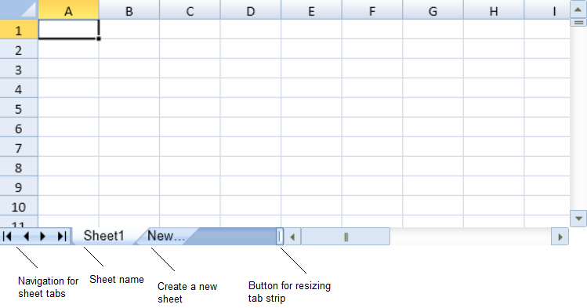
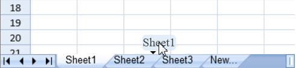
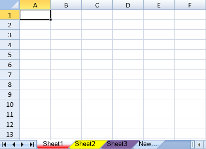
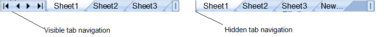

The tab strip allows the user to change sheets, add new sheets, or edit sheet names. You can also specify the start sheet, reorder the sheet tabs, and set tab colors.
Click on the sheet name tab to select a sheet. You can click on the New tab to add a new sheet. You can also use the resize button to change the width of the tab strip bar.

You can double-click on the sheet name to edit it. You can stop editing by clicking out of the tab or by using the Esc or Enter key.
You can specify whether the user can edit names with the options.tabEditable property. The options.newTabVisible property specifies whether the New tab is available to the user.
You can allow the user to reorder the sheet tab names by setting the options.allowSheetReorder property to true. Select the sheet name in the tab strip and drag between another sheet name in the tab strip. An indicator is displayed while dragging as shown in the following image. Release the mouse to move the tab.

The SheetMoving event and the SheetMoved event handles the user actions when a sheet is moved from its previous position to a new position. While the SheetMoving event occurs before a user drag and moves the sheet, the SheetMoved event occurs after a user has perfromed the drag and move operation on the sheet. In order to cancel sheet move, users can simply set the last parameter in the arguments ("cancel" parameter) in the SheetMoving class to true.
You can set the tab color and the start sheet with the options.sheetTabColor property and the startSheetIndex method. The following image displays tab colors and the start sheet.

You can hide the navigation buttons with the options.tabNavigationVisible property as illustrated in the following image.

You can hide the entire tab strip with the options.tabStripVisible property.
This example sets properties for the tab strip.
| JavaScript |
Copy Code
|
|---|---|
spread.options.tabStripVisible = true; spread.options.tabEditable = true; spread.options.newTabVisible = true; spread.options.tabStripRatio = 1; |
|
This example sets the start sheet index and the tab color.
| JavaScript |
Copy Code
|
|---|---|
spread.setSheetCount(3); spread.startSheetIndex(0); spread.getSheet(0).options.sheetTabColor = "red"; spread.getSheet(1).options.sheetTabColor = "#FFFF00"; spread.getSheet(2).options.sheetTabColor = "Accent 4"; |
|